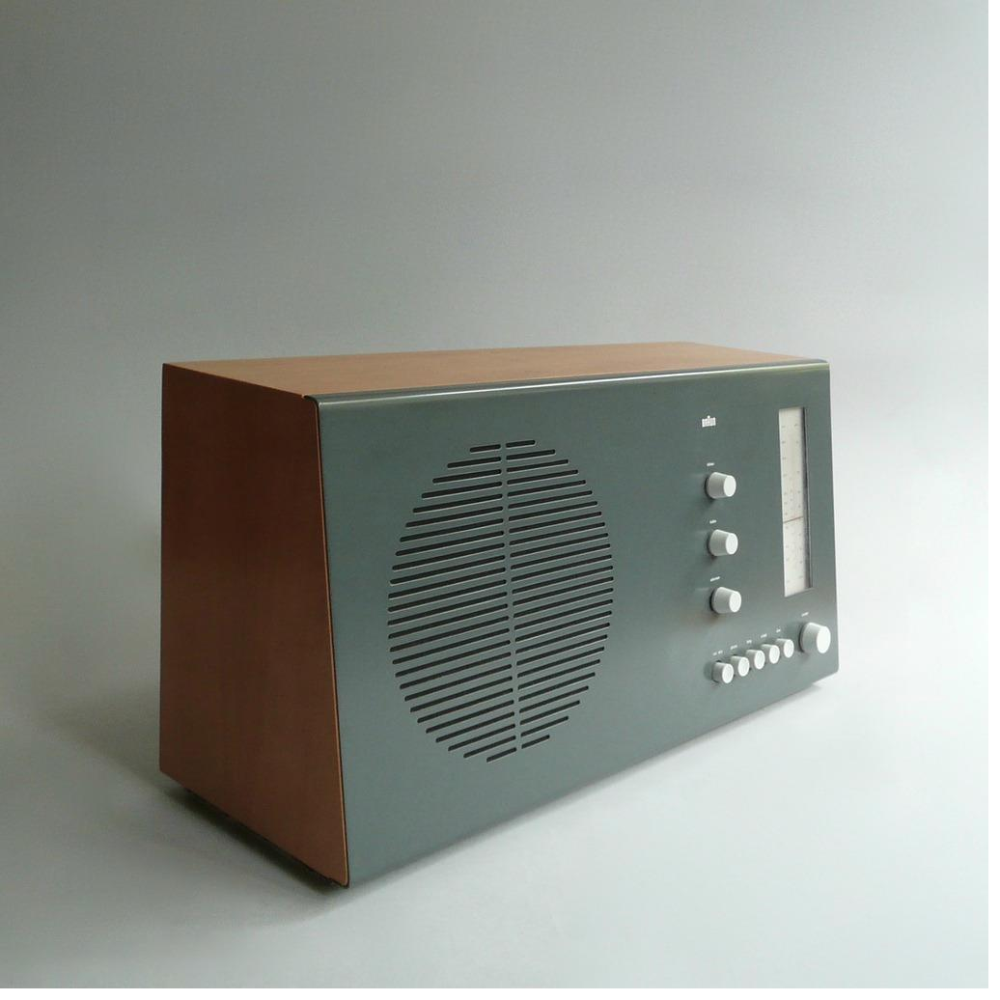
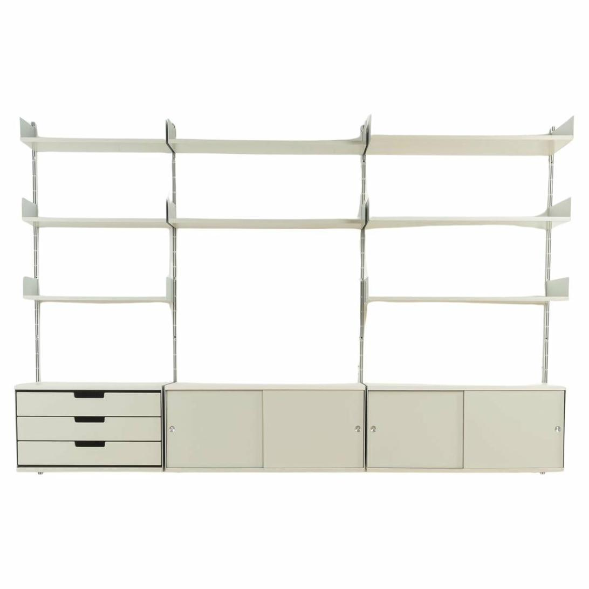

Diseños que cambiaron la historia
El trabajo de Rams en Braun y Vitsoe produjo algunos de los objetos más influyentes del siglo XX. Sus diseños no solo eran funcionales y bellos: eran honestos, duraderos y pensados para el usuario.

Braun · 1955–1995
Productos Braun
Durante cuatro décadas al frente del departamento de diseño de Braun, Rams desarrolló una familia coherente de productos electrónicos que priorizaban la función sobre la decoración.
Radiograbadores, calculadoras, afeitadoras y electrodomésticos pasaron por su criterio y salieron transformados: más simples, más claros, más duraderos. Cada botón y cada proporción tenían una razón de ser.

Vitsoe · 1960
Sistema 606
Diseñado en 1960 para Vitsoe, el Sistema Universal de Estantería 606 es probablemente el trabajo más representativo de Rams: modular, adaptable, reparable y todavía en producción hoy.
No sigue modas porque no tiene moda. Solo tiene propósito. Es la definición física de la filosofía "menos, pero mejor".
Galería de productos

Radio tocadiscos portátil TP1
Braun · 1959
Diseño compacto que popularizó el concepto de electrónica portátil.

Sistema musical hi-fi mural
Braun · 1964
Alta fidelidad con lenguaje visual sistemático y coherente.

Televisor FS 80
Braun · 1964
La capacidad innovadora de Rams aplicada al diseño de televisores.